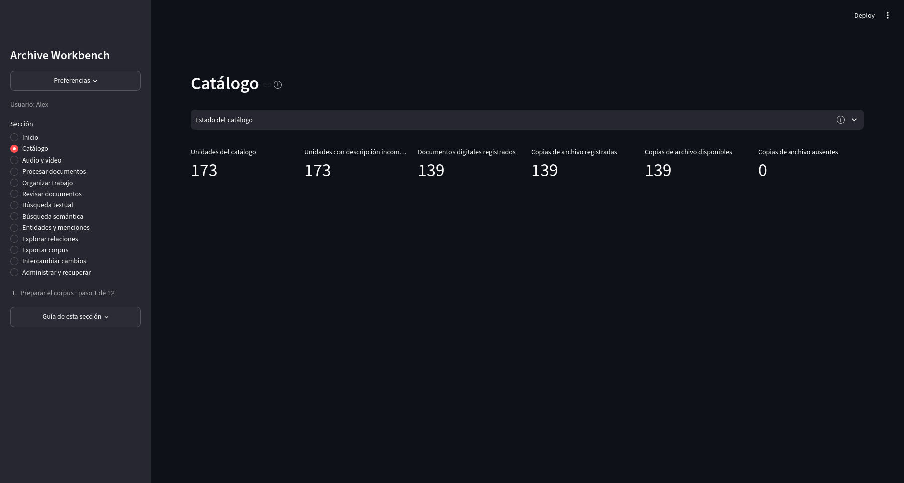
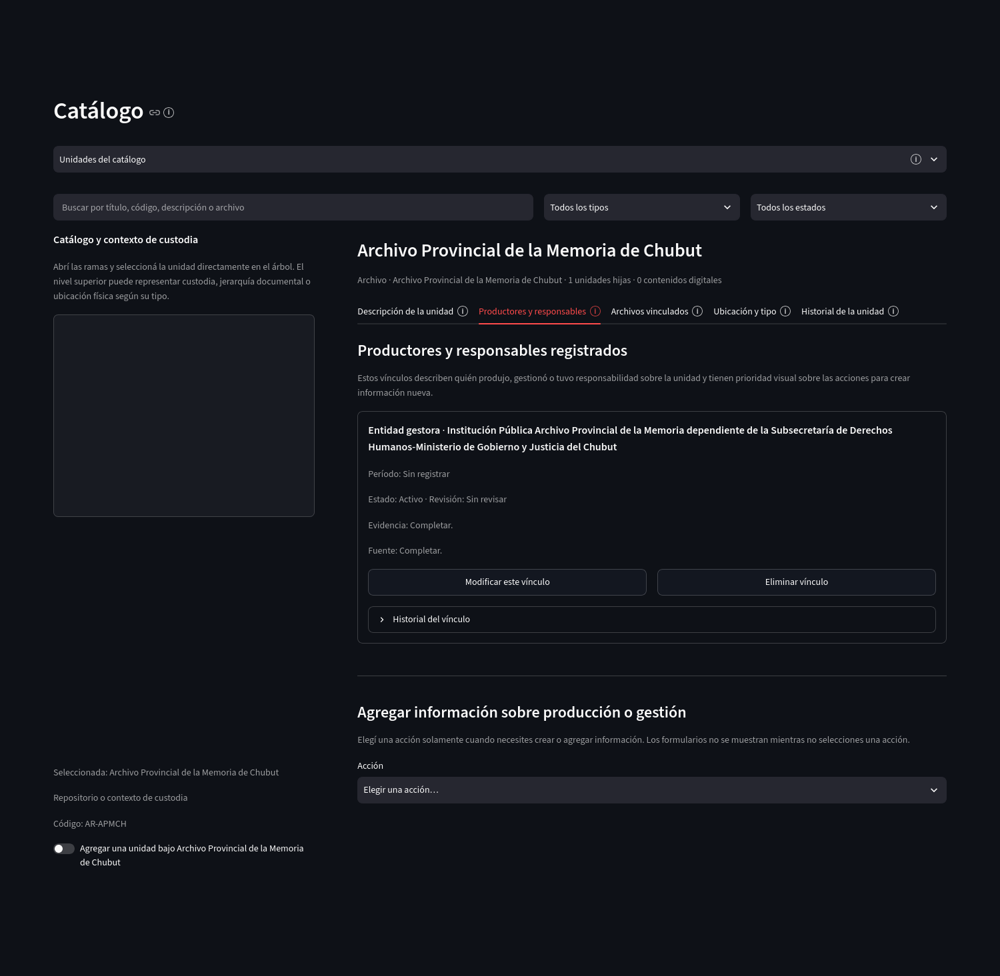
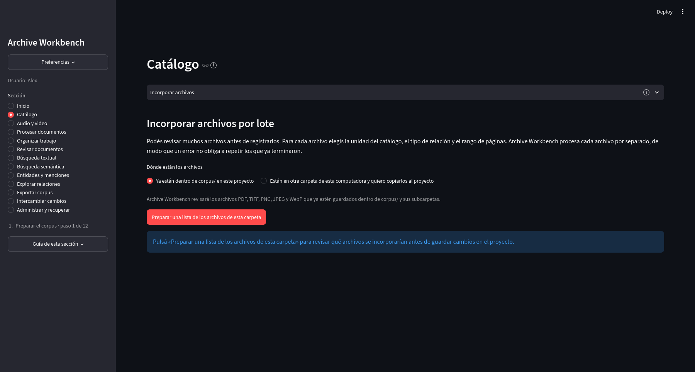

Preparación del corpus
Catálogo
El catálogo organiza el contexto documental del proyecto. Una unidad del catálogo es un registro descriptivo que puede representar un fondo, una sección, una serie, una unidad documental u otro nivel definido por el proyecto. Los archivos digitales se vinculan con esas unidades sin convertir automáticamente las carpetas de la computadora en una jerarquía archivística.
Estado del catálogo
Resume unidades registradas, descripciones incompletas, documentos digitales, copias de archivo disponibles y copias ausentes.
{kind=link}

Abrir captura completa
Unidades del catálogo
Al elegir una unidad se habilitan cinco pestañas. Descripción de la unidad reúne el título, código de referencia y datos descriptivos. Productores y responsables registra personas u organizaciones vinculadas con la producción o la gestión de esa unidad. Archivos vinculados muestra los objetos digitales relacionados. Ubicación y tipo controla el tipo de unidad y su relación con el nivel superior. Historial de la unidad conserva revisiones previas.
{kind=link}

Abrir captura completa
Archivos vinculados permite comprobar qué objetos digitales están asociados con la unidad del catálogo y si sus copias locales siguen disponibles. La relación entre la unidad y el objeto digital permanece registrada aunque el archivo físico no esté presente en esa computadora.
Ubicación y tipo reúne el nivel archivístico de la unidad y su relación con la unidad superior. La ubicación puede expresar jerarquía documental, custodia u otra posición definida por la configuración del proyecto.
Historial de la unidad permite recorrer revisiones anteriores de la descripción, el tipo y la ubicación. El estado actual de la unidad no reemplaza esas versiones previas.
Planilla del catálogo
La planilla XLSX, un formato de hoja de cálculo compatible con Excel, permite descargar una plantilla vacía o una copia editable del catálogo actual. Al importar una planilla, la aplicación muestra primero qué filas crearían o modificarían unidades; los cambios se guardan sólo después de una confirmación explícita.
Creación de una unidad
La creación manual usa los niveles archivísticos habilitados por el proyecto. La relación con una unidad superior se restringe a las combinaciones permitidas por la configuración.
Incorporación de archivos
La incorporación registra archivos digitales y su relación con una unidad del catálogo. Puede trabajar con archivos individuales o lotes. La identidad digital se calcula sobre el contenido del archivo; incorporar un archivo no modifica sus bytes.
{kind=link}

Abrir captura completa